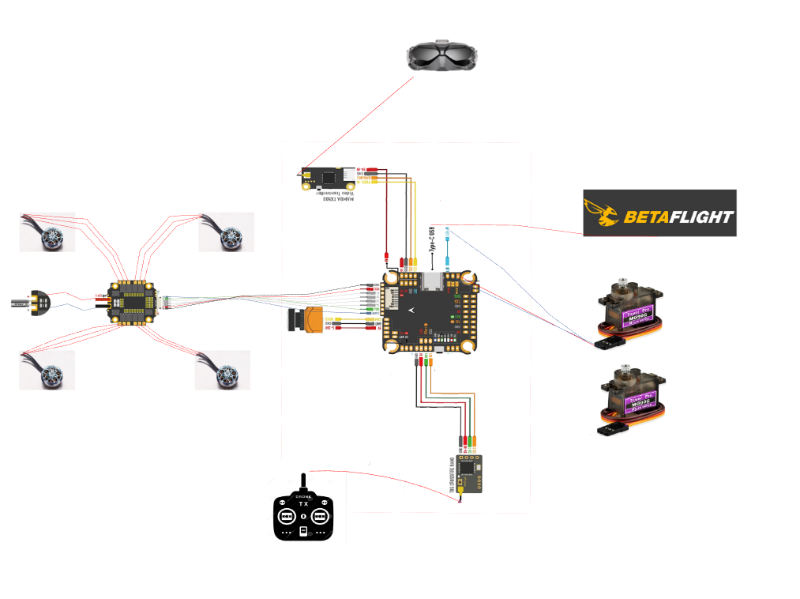
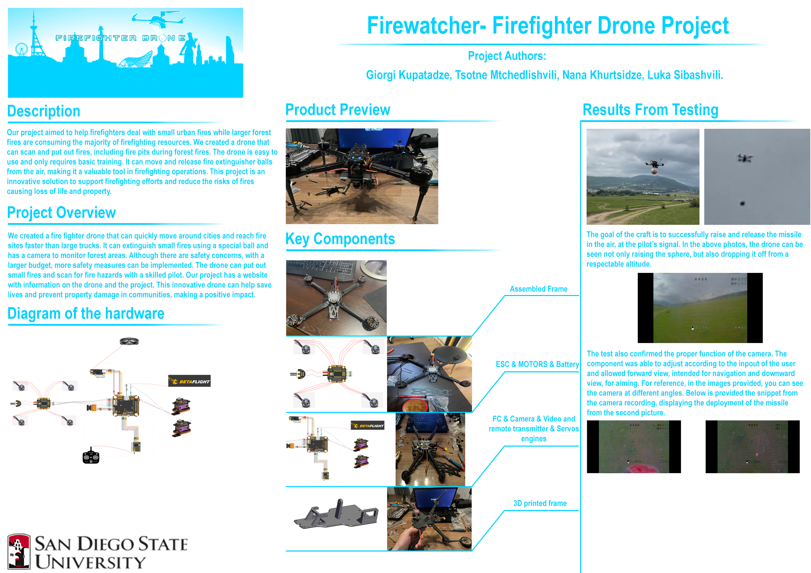

Our team came together in an effort to conclude the final capstone project and graduate in peace. It is our goal to gain important skills such as min-maxing of tasks, communication, organisation and to hone our capabilities as developers and engineers. Our team holds values such as being supportive, communicative, honest and dilligent and applies them in great effect, forging an easy to get accustomed to and efficient workforce.
Our project aims to develop and introduce the Fire Fighter drone, a cutting-edge technology designed to aid in firefighting operations. The Fire Fighter drone is user-friendly and easy to operate, with a single button that allows the pilot to drop fire extinguisher balls from the air. The drone also features a camera tilt function, which facilitates accurate targeting of the fire. To achieve this functionality, the drone is equipped with two servo engines that enable it to drop objects and tilt the camera with ease. This advanced technology ensures that the Fire Fighter drone is a reliable and effective tool for fighting fires. In addition, the drone also features a stabilization mode, which enables it to maintain its position in the air without any human intervention. This feature is particularly important in adverse weather conditions, where the drone needs to remain stable for accurate targeting and firefighting operations. Our project also includes the development of a website, which serves as a valuable resource for information about the Fire Fighter drone and fires in the city. The website provides up-to-date information on the latest technological advancements in firefighting and the role that the Fire Fighter drone plays in this regard. In conclusion, the Fire Fighter drone is a revolutionary innovation in firefighting technology. With its easy-to-use features, advanced technology, and website resource, it is an invaluable tool for firefighters and the public alike. Our project has successfully developed and introduced this technology, contributing to the ongoing efforts to improve fire safety and save lives.
The concept of a fire fighter drone was born out of the increasing number of fire incidents that have occurred in recent years, both in urban and forest environments. In particular, during the summer months, high temperatures have contributed to the rise of local fires such as those caused by burning trash cans or cars. The traditional method of calling the fire department by dialing 112 and waiting for a large fire truck to arrive is often inadequate, especially in heavily congested urban areas. With the potential for a small fire to become a serious problem, a more efficient and effective solution was needed. To address this issue, we developed a fire fighter drone that is able to quickly maneuver in the city and reach the fire site much faster than a large fire truck. Equipped with a special ball that can extinguish small fires, such as those caused by burning cars or trashcans, this drone is an innovative solution to the problem of urban fires. Furthermore, the drone has a camera that enables it to monitor forest areas, providing an additional layer of safety for communities at risk of wildfires. While there may be concerns about the safety of using drones in urban areas, we believe that with a larger budget, even greater safety measures could be implemented. As it stands, the drone is capable of extinguishing small fires and scanning for potential fire hazards with the help of a skilled pilot. In addition, our project includes a website where people can learn about the specifications of our fire fighter drone and find other useful information about our project. Overall, our fire fighter drone is an innovative solution to a growing problem. With the potential to save lives and reduce property damage, we believe that this project has significant potential to make a positive impact on our communities. Our project aimed to provide a solution that could assist firefighters in combating small-scale urban fires, particularly during times when large forest fires demand the majority of firefighting resources. In addition, during large forest fires, it is essential to quickly identify and extinguish fire pits to prevent further spreading. To achieve this, we developed a drone that can effectively scan and extinguish fires. The drone is user-friendly and requires only basic training to operate. Its capabilities include moving fire extinguisher balls and releasing them from the air, making it an efficient and effective tool in firefighting operations. This project serves as an innovative solution to support firefighting efforts and minimize the risk of loss of life and property caused by fires.
The following diagram illustrates the electronic connections between the various components of our drone project. This diagram provides a clear overview of the parts used and the specific pins that connect each component. Our drone's electronic configuration was managed using the BETAFLIGHT configuration tool. This powerful tool allowed us to configure crucial components such as the motors, flight types, servo engines, remote control, and camera module. By utilizing BETAFLIGHT, we were able to fine-tune the performance of our drone and ensure that it was optimized for the specific requirements of our project. Overall, this electronic schema and the use of the BETAFLIGHT configuration tool were essential components in the successful development and operation of our drone.
The main frame of our drone was the APEX/Mark 7inch model. We chose this specific frame size because we wanted the drone to be able to lift as much weight as possible. Larger propellers were necessary to achieve this, and the 7-inch frame provided sufficient space for us to use these larger propellers. To ensure that the drone was as robust as possible, we opted to use carbon fiber as the primary frame material. This material is known for its strength and durability, making it an excellent choice for disaster scenarios where the drone may be subject to crashes or other types of impact. The carbon fiber frame also provides a lightweight design, allowing the drone to be agile and maneuverable. The attached picture shows the main body and wings of the drone. The design of the frame was carefully considered to provide the necessary support for the electronic components and payload, while also being aerodynamic and efficient. Overall, the APEX/Mark 7inch frame was an ideal choice for our project, providing the necessary strength, size, and weight capacity to meet our specific requirements.
The main controller for our drone's motors is the Electronic Speed Controller (ESC). The ESC has special pins designed specifically for the motor connections. The motors, in turn, have three main cables mounted on them, as shown in the attached diagram. For our project, we are using XING2 2809 CINELIFTER motors, which have an input voltage of 24V and a peak current of 50A. The ESC is capable of providing this power, allowing the motors to move the drone and any external weight we intend to add during flight. To power the drone, we are using CNHL ALCK Series 1300mAh batteries. When fully loaded, the drone's flight time is around 20 to 30 minutes, and the normal voltage of the battery is 22.2V. The battery is connected to the ESC, as shown in the attached diagram. Overall, the combination of the XING2 2809 CINELIFTER motors and the CNHL ALCK Series 1300mAh battery provided an excellent power source for our drone, allowing it to operate efficiently and effectively while carrying additional weight. The ESC played a crucial role in controlling the power output of the motors, ensuring that the drone's flight was stable and precise.
The Fc (Flight Controller) module is a crucial component in the design and operation of a drone. It consists of several pins, each with its own purpose. In this report, we will provide a detailed description of the pins used in the Fc module and their functions. The Camera module is an essential part of a drone, and it requires a dedicated pin to function correctly. The Fc provides a ground and 5V pins for power supply, as well as a specific pin for the Camera module. Please refer to Figure 1 for a visualization of these pins. The Servo engine_1 is another critical component of a drone. We used the LED pin for it since the LED pin has two input options: 1 and 0. The servo engine_1 also has the same inputs, making the LED pin an ideal choice. Next to the LED pin, there are ground and 5V pins for power supply. Figure 1 shows a visualization of these pins. Similarly, for Servo engine_2, we used the PPM, ground, and 5V pins. Please refer to Figure 1 for a visualization of these pins. The Video transmitter is another crucial component of a drone, and it has its own dedicated pins. These pins are placed next to the TYPE-C USB port and consist of TX3, GND, and 9V pins. Figure 1 provides a visualization of these pins. Finally, the Remote controller receiver also requires specific pins to function correctly. The Fc provides RX1, GND, and 5V pins for power supply, as shown in Figure 1. In conclusion, the Fc module has many pins, each with its specific purpose, making it a crucial component in the design and operation of a drone. A detailed understanding of these pins and their functions is essential to ensure proper operation and performance of the drone. Please refer to Figure 1 for a visualization of these pins.